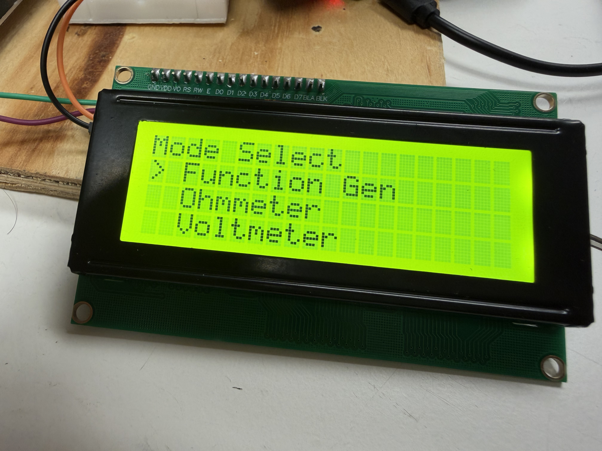
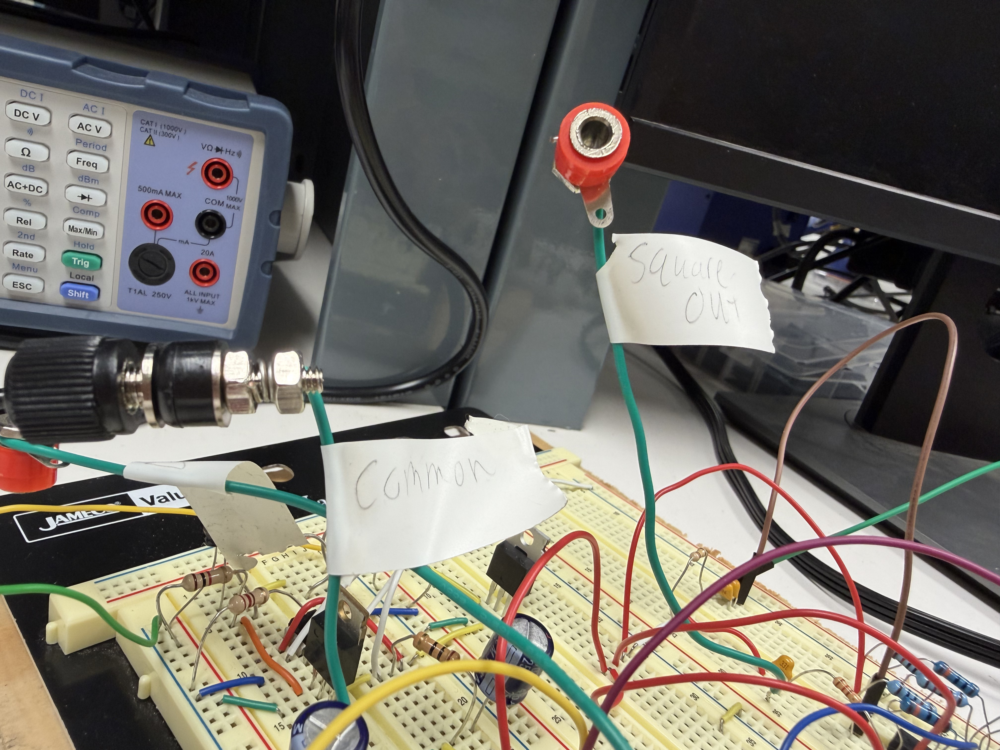
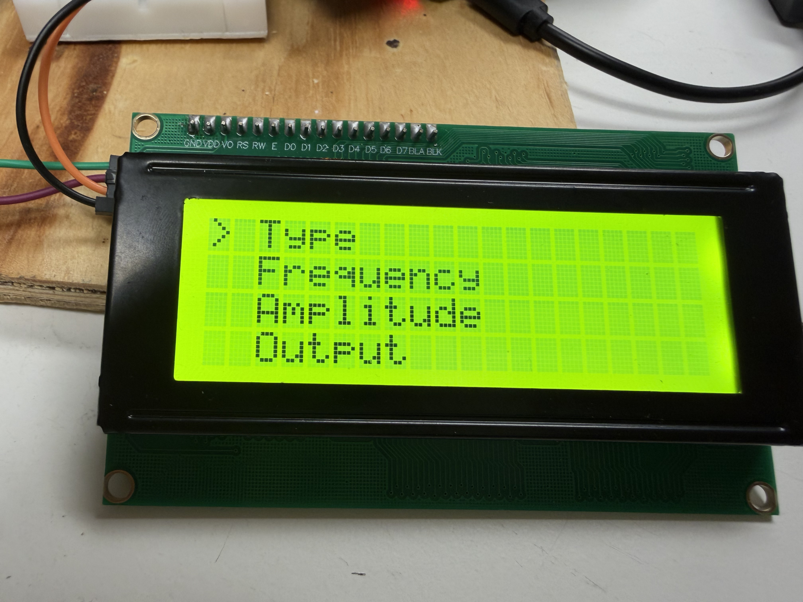
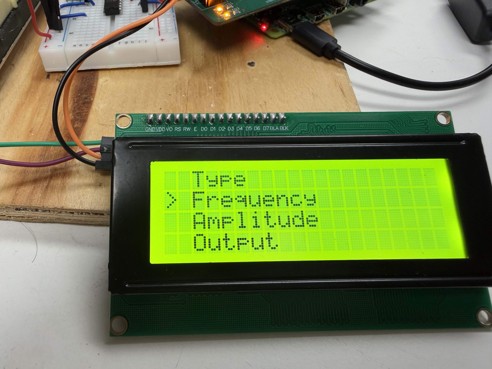
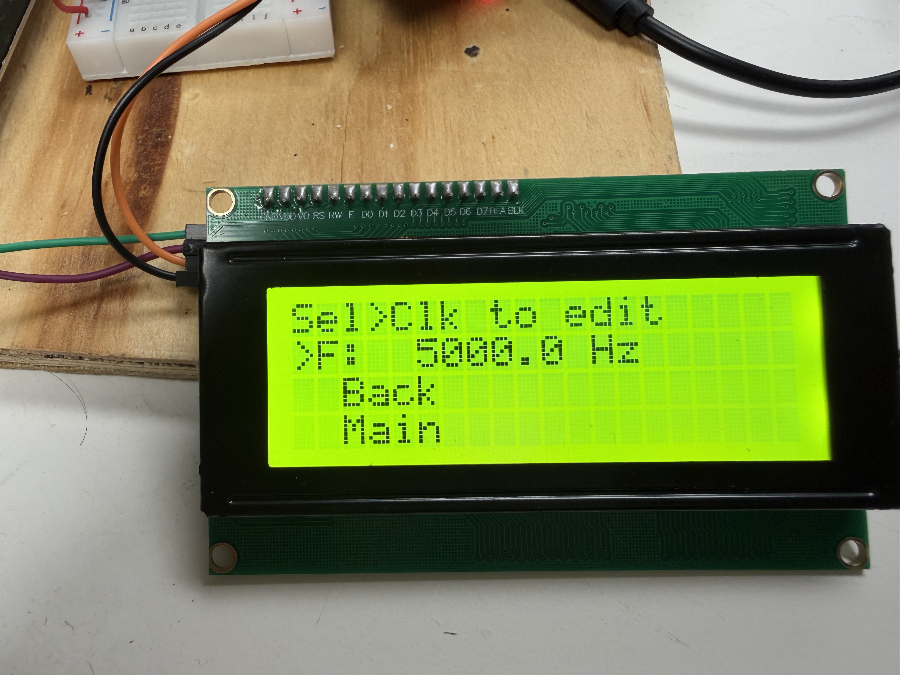
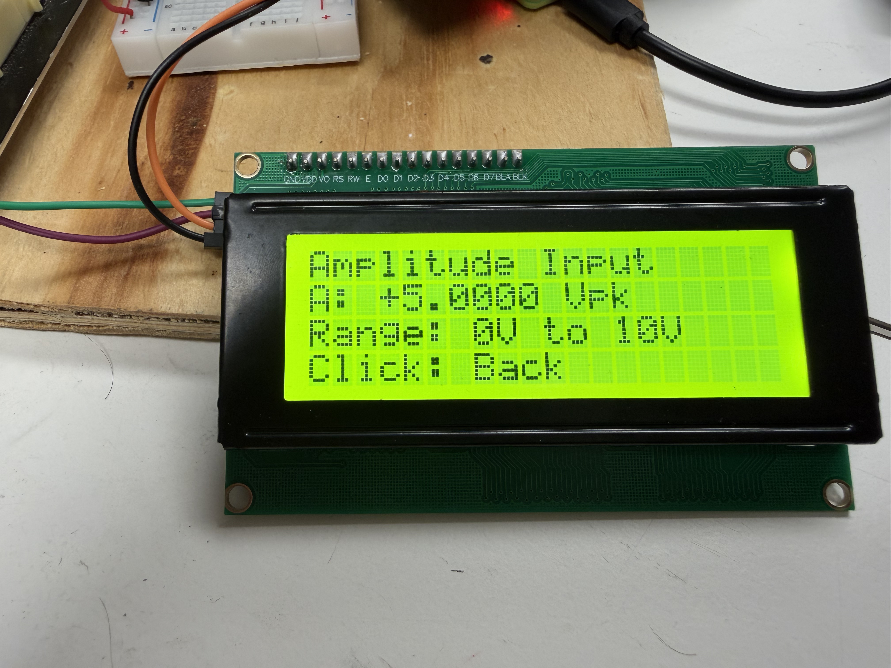
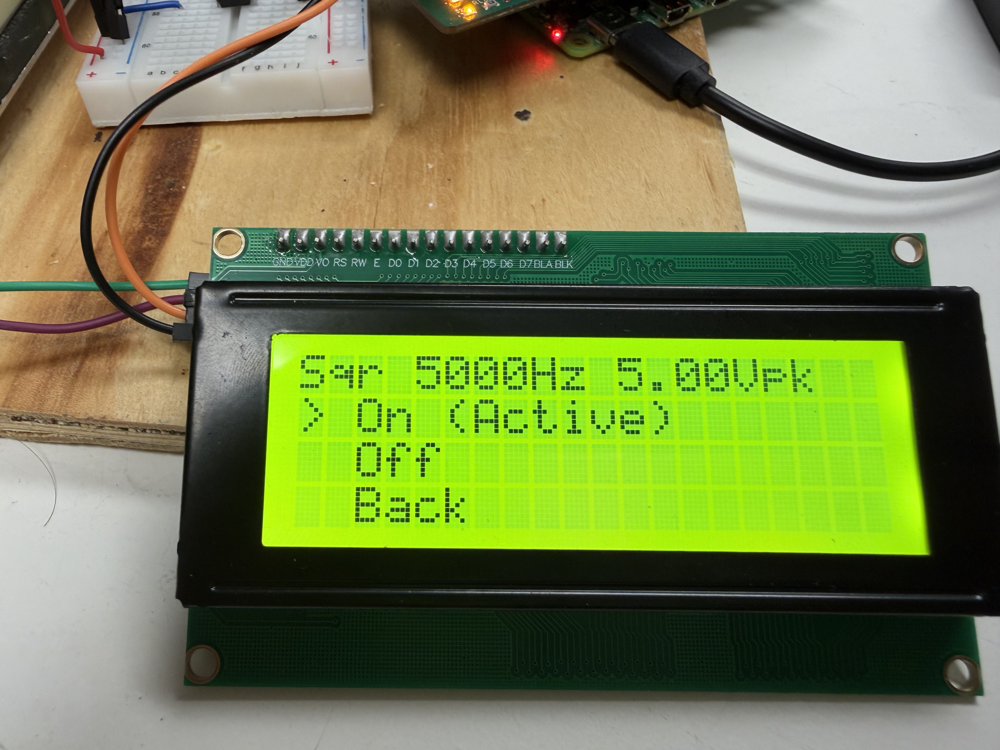
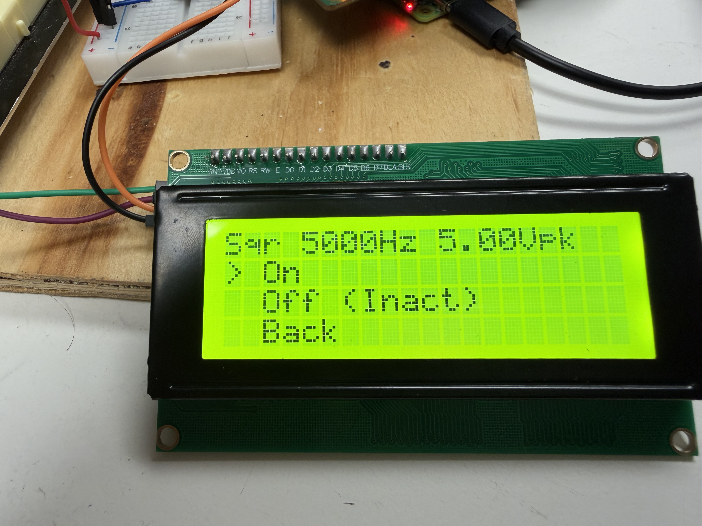

Function Generator
Welcome to the Function Generator manual. This tool lets you generate a square wave signal at a frequency and amplitude you choose, and output it on the Tool Bench’s signal terminal. The output screen shows your live settings so you always know exactly what is being produced.
The signal is a square wave centred at 0V, meaning it swings equally above and below ground. For example, if you set an amplitude of 5V, the output will swing from −5V to +5V with a 50% duty cycle — spending equal time at each level.
Output type: Square wave, 50% duty cycle • Frequency: 100Hz – 10kHz • Amplitude: 0V – ±10V peak • Resolution: 0.3125V steps • Output turns off automatically when navigating away
Menu Overview
The Function Generator has more options than the other tools, so it helps to understand the layout before diving in. From the main Function Generator menu you can access four settings pages plus the output controls:
- Type — Select the waveform type (Square Wave only so you can ignore this setup)
- Frequency — Set the output frequency in Hz
- Amplitude — Set the peak amplitude in volts
- Output — Turn the signal on or off and view live settings
- Back / Main — Exit the Function Generator (output turns off automatically)
You can configure Type, Frequency, and Amplitude in any order before turning the output on. The recommended order is shown in the steps below.
Access the Function Generator
From the main system menu, turn the rotary encoder to highlight Function Generator and press to select it. The Function Generator menu will appear, showing up to four options at a time. Scroll up and down with the encoder to see all six options.

Connect Your Oscilloscope
Before configuring any settings, connect your oscilloscope to the Tool Bench so it is ready to display the signal as soon as you turn the output on.
There are two connections to make:
- Plug your oscilloscope probe tip into the terminal labelled DC Out on the Tool Bench.
- Plug the probe’s ground clip into the terminal labelled Ground.
Refer to the image below to identify the correct terminals. Getting these the right way round matters — swapping them will not damage anything, but your oscilloscope will show an inverted or floating signal.

Options Screen and Select a Waveform Type
Now we can see the various options that come with the function generator tool. The type selection is not needed as the Square Wave is the only type and is set by defaut. If you are curious, scroll to Type and press the encoder to enter the Type selection screen. The top line shows the currently selected type. Scroll to Square and press to confirm it. The system will return you to the Function Generator menu automatically.
At the moment, Square is the only available waveform type. It is selected by default when you enter the Function Generator, so you can skip this step.
To exit without changing the type, scroll to Back and press. To go straight to the main system menu, select Main.

Set the Frequency
Scroll to Frequency on the main menu and press the encoder to enter the frequency screen. This screen works slightly differently from the others — it has two modes: navigation mode and edit mode.
When you first enter the screen, you are in navigation mode. The encoder scrolls between three items: the frequency value row, Back, and Main. The currently highlighted item is shown with a > prefix.
To actually change the frequency, scroll until the frequency row is highlighted (it is at the top, index 0) and press the encoder. The display will change — the prefix becomes * to indicate you are now editing. The encoder no longer scrolls the menu; instead, each click of the encoder rotates the frequency value up or down by 10 Hz per step.
The frequency range is 100Hz to 10,000Hz. The value cannot be scrolled below 100Hz or above 10kHz. Once you are happy with the value, press the encoder again to exit edit mode and return to navigation mode. The new frequency is saved and will be applied the next time the output is turned on.
F: 5000.0 Hz.
To go back to the Function Generator menu, scroll to Back in navigation mode and press. To jump to the main system menu, select Main (this will also turn the output off).


Set the Amplitude
Scroll to Amplitude on the main menu and press the encoder. The amplitude screen shows the current peak voltage value and the valid range.
Turn the encoder to increase or decrease the amplitude. Each step changes the value by 0.3125V, and the range is 0V to 10V peak. The value shown is the peak voltage of the square wave — the signal will swing from negative that value to positive that value, centred at 0V. For example, setting A: +5.0000 Vpk produces a wave that goes from −5V to +5V.
Press the encoder to confirm your amplitude and return to the Function Generator menu.

Turn the Output On
Once you have set your type, frequency, and amplitude, scroll to Output on the main menu and press the encoder to enter the output screen.
The top line of the output screen shows a summary of your current settings, for example: Sqr 5000Hz 5.00Vpk. Below it are four options: On, Off, Back, and Main.
Scroll to On and press the encoder. The system will:
- Start the hardware PWM signal at your chosen frequency with a 50% duty cycle.
- Set the amplitude digipot to the correct wiper position for your chosen peak voltage.
- Display On (Active) to confirm the output is live.
The summary line at the top continues to show your live settings while the output is on. The output will remain active as long as you stay on the output screen.
Scroll to Off and press the encoder. The PWM signal stops immediately and the amplitude control is reset. The label changes to Off (Inact) to confirm the output is no longer active. You can turn it back on again at any time without leaving the screen.


Exit the Function Generator
From the output screen, select Back to return to the Function Generator main menu, or Main to go directly to the top-level system menu. In both cases the output is turned off automatically.
From the Function Generator main menu, selecting Back or Main also turns off any active output and returns to the system main menu.

Quick Reference — Navigation Summary
Getting lost in the menus? Here’s the full path from the top level to each setting:
- Change waveform type: Main menu → Function Generator → Type → Square → press
- Change frequency: Main menu → Function Generator → Frequency → highlight frequency row → press to edit → turn → press to confirm
- Change amplitude: Main menu → Function Generator → Amplitude → turn → press to confirm
- Turn output on: Main menu → Function Generator → Output → On → press
- Turn output off: Output screen → Off → press (or navigate away)
Example Demonstration
Watch the video below to see the Function Generator configured and producing a live square wave output, including how to adjust frequency and amplitude.